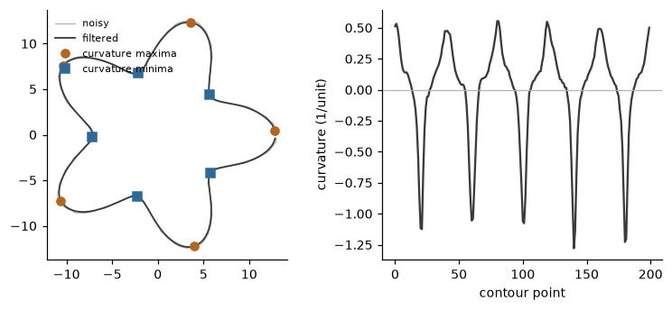

Imaging#
Not every recording of a body is a skeleton. A video camera gives images, and the first step of an image-based analysis is to separate the body from the background and to reduce it to a few quantities that follow the movement. This page covers the features that do so, from the silhouette of a person: where its centre and its parts are, how its images evolve over time, and how the shape of its outline can be measured. They are the image-side counterpart of the skeleton features, and their outputs (points in the image, regions, contours) can feed the low-level features of Kinematics and energy and Shape, symmetry and balance. The EyesWeb platform [6] offered the same operations as blocks of its imaging library.
Notation and conventions#
An image is an array with \(H\) rows and \(W\) columns. A pixel is at column \(x\) (counted from the left, from 0) and row \(y\) (from
the top, from 0), so the \(y\) axis points down. Coordinates are in pixels of the frame of the image you give, never in the frame
of a cropped region. A silhouette is a binary mask \(S(x, y)\) in which every non-zero pixel is foreground, the body. A bool
array is a 0 / 1 mask; any other numeric array must hold whole numbers in 0 to 255. “Left” and “right” are those of the image:
left means the smaller \(x\) (so the right arm and the right leg of the body parts are on the smaller \(x\)).
A contour is a closed sequence of \(N\) points \(\mathbf{p}_i = (x_i, y_i)\), an \((N, 2)\) array in which the last point is a neighbour of the first. The contour of a silhouette comes from any contour-finding step of your image pipeline; the features here take the points, in the unit you give them.
The frame index is \(n\) (symbols as in Notation, units and conventions). None of the image features needs the time, so none takes a sampling_rate.
Where the body is: centroids#
The centre of gravity of the silhouette is the mean position of its \(M\) foreground pixels,
truncated to whole pixels. It is a cheap proxy of the position of the body and, followed in time, of its displacement.
SilhouetteCentroids goes further and splits the silhouette recursively into rectangles
around the centre of gravity, taking the centre of gravity of the foreground of each rectangle. The result is a hierarchy of 14
points: the centre of gravity (the root), the head and the two shoulders, then the elbows, the forearms and the hands, and the
knees and the feet, each computed from the one it depends on. It is a body model that needs no skeleton.
silhouette tells which part of the body the mask shows ("full", "upper", "lower", "left" or "right"), and the
centroids of the missing half are not computed. parts selects the centroids to output; one is computed when it, or one
that depends on it, is requested. With filter_centroids=True each centroid is smoothed in time by
a first-order filter with the dimensionless coefficient \(\alpha\in[0,1]\) (alpha, 0.75 by default): 1 does not filter, 0 keeps
the first value. As in EyesWeb the filter works on the position inside the bounding box of the silhouette, not on the movement
of the box.
Where the parts are: body parts from projections#
SilhouetteBodyParts divides the silhouette into six parts (the head, the trunk, the two
arms and the two legs), each with its bounding box and its mask, so that single parts can be analysed from a plain image. It
uses the projection histograms of the mask, the count of foreground pixels along each column and each row. The columns that hold
the arms are found by accumulating the area from each side until the fraction arm_percentage of the area is not arm; the legs
by the horizontal extent of the lower rows, starting legs_search of the way between the barycentre and the feet; the neck by
the first row, going up from the barycentre, where the body narrows; each arm starts at the first row that holds more
than arms_max_threshold of its width in foreground pixels and ends at the first row with fewer than arms_min_threshold. A part is dropped when it is empty or touches the first
column or the first row of the frame. The detection is a set of thresholds on projection histograms, which is why the
parameters are fractions of the area and of the width.
>>> import numpy as np
>>> from pyeyesweb.physical_signals import SilhouetteBodyParts, SilhouetteCentroids
>>> rows, columns = np.mgrid[:240, :320]
>>> body = (abs(columns - 160) <= 28) & (rows >= 60) & (rows <= 140) # trunk
>>> body |= ((columns - 160) ** 2 / 18 ** 2 + (rows - 40) ** 2 / 22 ** 2 <= 1) # head
>>> body |= (abs(rows - 75) <= 7) & (columns >= 80) & (columns <= 240) # arms, a horizontal bar
>>> body |= (abs(columns - 147) <= 9) & (rows > 140) & (rows <= 225) # legs
>>> body |= (abs(columns - 173) <= 9) & (rows > 140) & (rows <= 225)
>>> mask = body.astype(np.uint8) * 255
>>> centroids = SilhouetteCentroids().process(mask)
>>> centroids.centroids[:2].tolist() # centre of gravity and head, (x, y) in pixels
[[160.0, 114.0], [159.0, 48.0]]
>>> centroids.normalized[0].tolist() # the centre of gravity, as a fraction of the frame
[0.5, 0.475]
>>> parts = SilhouetteBodyParts().process(mask)
>>> parts.regions.tolist() # (x, y, width, height) of each part
[[138, 136, 22, 90], [160, 136, 22, 90], [142, 59, 36, 77], [80, 68, 62, 15], [178, 68, 63, 15], [142, 19, 36, 40]]
>>> parts.is_found.tolist()
[True, True, True, True, True, True]
The rows of regions are in the order right leg, left leg, trunk, right arm, left arm, head (zeros for a part that was not
found). The figure shows the centroids and the boxes on this synthetic silhouette.

How the image evolves: the videogram#
A video is summarised in one image that shows its evolution in time: every frame is reduced to a single line and the lines of
successive frames are placed side by side, so that a movement becomes a visible trace. With a motion image (a frame
difference) the result is called a motiongram [30]. For a grayscale frame
\(I(h, w)\) and mode="horizontal", the line of a frame is the sum of each row, scaled by its maximum to 0 to 255,
each channel of a colour frame being summed and scaled on its own; mode="vertical" sums the columns instead.
Videogram keeps the last window lines (500 by default). The newest line is written
at a position that wraps around, so the oldest is overwritten (direction sets where it goes), and end_of_image_mode="scroll"
rotates the image once it is full so that the oldest line comes first. The output is an integer image in 0 to 255 with channels
last; the lines not written yet are 0, and so is the line of a black frame. A frame of another size restarts the videogram (the
reason says so).
A bar that moves up and down in front of a still background draws a sine in the videogram:
>>> from pyeyesweb.physical_signals import Videogram
>>> videogram = Videogram(window=100)
>>> for n in range(100):
... frame = np.zeros((60, 40), dtype=np.uint8)
... y = int(30 + 20 * np.sin(2 * np.pi * n / 50))
... frame[y - 3:y + 3, 10:30] = 255
... result = videogram.process(frame)
>>> result.videogram.shape # (rows of the frame, window, channels)
(60, 100, 1)
>>> int(result.videogram.max())
255
>>> [int(np.argmax(result.videogram[:, n, 0])) for n in (0, 12, 25, 37)] # row of the bar at four instants
[27, 46, 27, 7]
The shape of the outline: contours#
The four contour features act on an \((N, 2)\) contour, one per call, and keep no state, except the labels of
BodyPartsFromCurvature. They are low-level features: they measure one frame.
Smoothing. The outline of a silhouette is jagged because it follows the pixel grid.
FilterContour convolves each coordinate with a Gaussian kernel of window samples centred on the
sample being filtered, with weights proportional to \(\exp\bigl(-(i-\lfloor w/2\rfloor)^2/(2\sigma^2)\bigr)\) for
\(i=0,\dots,w-1\), normalised to sum 1, where \(w\) is window and \(\sigma\) is gaussian_sigma. The contour is treated as closed:
the neighbours of the first point include the last ones. \(\sigma\) is in samples, not in length units, and the window must be
shorter than the contour, otherwise the status is NO_OUTPUT.
Curvature. ContourCurvature estimates the curvature at every point from the point and its
two neighbours. With \((x', y')\) the step from the previous point to this one and \((x'', y'')\) the difference between the next
step and this one,
which is \(1/R\) for a circle of radius \(R\) and 0 for a straight run of equally spaced points. The sign says which way the contour turns, counter-clockwise (positive) or clockwise, in the coordinate frame of the input; in image coordinates, where \(y\) points down, the orientation on the screen is reversed. Value \(i\) belongs to point \(i\) (the values used to be rotated by one point in the original, which is corrected in the core). The unit is the inverse of the unit of the contour.
Convex hull. ConvexHull gives the smallest convex polygon that contains the contour, as the
list of its vertices; only strictly convex vertices are kept, so collinear points on an edge are dropped. The vertices run
clockwise when \(y\) points up, starting from the point with the smallest \(x\).
Body parts from curvature. BodyPartsFromCurvature finds the salient points of the outline
(the head, the hands and the feet of a silhouette) as the extrema of its curvature. The contour is cut at the zero crossings
of the curvature, at least minimum_distance points apart, and in every piece the extremum of larger magnitude is a minimum
point when it is negative and a maximum point when it is positive. With track_points=True the labels of the previous call are
carried over to the nearest new points, up to number_of_points of them, so a label stays with the same body part from frame to
frame. The extremities of a body are read from the curvature of its silhouette, as in the EyesWeb silhouette analysis.
A contour with five lobes shows the chain. Without smoothing, noise of standard deviation 0.05 in the coordinates (the radius is about 10) multiplies the largest curvature by about six and creates spurious extrema; after the Gaussian filter the five lobes and five valleys are found.
>>> from pyeyesweb.low_level import BodyPartsFromCurvature, ContourCurvature, ConvexHull, FilterContour
>>> t = np.linspace(0.0, 2.0 * np.pi, 200, endpoint=False)
>>> radius = 10.0 + 3.0 * np.cos(5.0 * t)
>>> clean = np.column_stack([radius * np.cos(t), radius * np.sin(t)])
>>> noisy = clean + np.random.default_rng(0).normal(0.0, 0.05, clean.shape)
>>> curvature = ContourCurvature().process(noisy).curvature
>>> round(float(np.abs(curvature).max()), 1)
7.7
>>> smooth = FilterContour(window=9, gaussian_sigma=2.0).process(noisy).contour
>>> smooth_curvature = ContourCurvature().process(smooth).curvature
>>> round(float(np.abs(smooth_curvature).max()), 1)
1.3
>>> len(BodyPartsFromCurvature().process(curvature, noisy).minimums)
11
>>> parts = BodyPartsFromCurvature().process(smooth_curvature, smooth)
>>> len(parts.minimums), len(parts.maximums)
(5, 5)
>>> sorted(parts.maximums)
['label_max0', 'label_max1', 'label_max2', 'label_max3', 'label_max4']
>>> ConvexHull().process(clean).hull.shape
(35, 2)
Practical notes#
Input images. The image features take one 8-bit array per call, (H, W) for a grayscale image or a mask and (H, W, C) for
colour; run takes (T, H, W[, C]) or a list of images. An empty image is INVALID_INPUT, and so is a mask without
foreground. The result of these features is otherwise OK on every call: there is no warm-up. Outputs that are images have a
shape known only from the first frame.
Units. Centroids and regions are in pixels; normalized divides by the frame size and is dimensionless in \([0, 1]\). The
contour features keep the unit of the contour. To go from pixels to metres, scale the input: the library does not know the
scale of your camera.
Known limitation. The tests of the body-parts detector read pixels outside the mask or the region of interest in some
cases (the neck test and the walk over the arm columns, in particular when arm_percentage is above 1); such pixels count as
background.
Corrected in the core. The barycentre of the body-parts detector is the centroid of the mask truncated to whole pixels, and the channel sums of the videogram are independent (the original aliased them).
Further reading#
The platform that the imaging features come from is described in [6] and [8]. For the
parameters of each feature see its API page, for example SilhouetteCentroids.